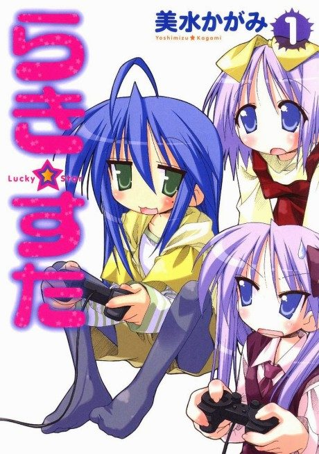

Lucky☆Star
らき☆すた
Konata, an otaku, and her friends chat about anything and everything in their daily school life.
After the anime, read the manga from Volume 4.
7.5AniList score
—Animeter, no votes yet
24episodes
Rate it or report where you stopped
Anime finished. Where does the manga pick up?
Start at Volume4
The anime skips and rearranges many short strips, and episode 24 is anime-original. Volume 4 (Chapters 88-124) is the suggested jump-in point, though reading from Chapter 1 is recommended.